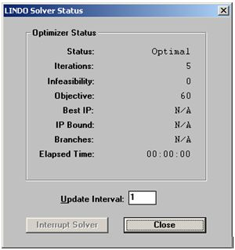

Torna alla pagina di Ricerca Operativa
:: Ricerca Operativa - Esercizi di laboratorio ::
Esercizio 3: Scommesse su cavalli
Problema
In una corsa di cavalli i favoriti sono Fulmine, Freccia, Dardo e Lampo, quotati rispettivamente 3:1, 4:1, 5:1 e 6:1. Ho un budget di 57 Euro da spendere. Voglio massimizzare la vincita nel caso peggiore.
Formalizzazione
Dati
| C = 4
| cavalli
|
|
| qi
| quotazione cavallo i (1, ... , C)
|
|
| b
| budget
| [€]
|
Variabili
| xi ≥ 0
| puntata su cavallo i (1, ... , C)
| [€]
|
Notare il maggiore uguale a 0, condizione necessaria dato che non posso scommettere una somma negativa di euro. Notare inoltre che la approssimiamo come variabile continua, anche se in realtà non possiamo puntare una cifra qualsiasi (ad esempio, 4 pi greco euro).
Vincoli
| ∑i xi ≤ b
| con i = 1, ... , C
| [€]
|
Funzione obiettivo
Vogliamo massimizzare la vincita nel caso peggiore, quindi:
| max min { qi • xi }
| con i = 1, ... , C
| [€]
|
La funzione scritta così però non è lineare, e non lo sarebbe stata nemmeno nel caso opposto, ovvero con un min max. Dunque cosa si fa? Si crea una nuova variabile il cui valore è "min { qi • xi }", così che poi si possa trovare il massimo tra tutti i valori che assume.
Definiamo così z = min { qi • xi }
ed aggiorniamo i vincoli e la funzione obiettivo:
Vincoli (aggiornati)
| ∑i xi ≤ b
| con i = 1, ... , C
| [€]
|
| z ≤ qi • xi
| per ogni i = 1, ... , C
|
|
Funzione obiettivo (aggiornata)
max z
Il problema è diventato così lineare.
Classificazione del problema
Osservazioni da fare:
- le variabili sono continue o no?
- i vincoli sono lineari o no?
Le variabili sono variabili continue.
I vincoli sono espressi con un polinomio di primo grado, quindi il modello è lineare.
La funzione obiettivo è espressa con un polinomio di primo grado, quindi il modello è lineare.
Riassumendo: è un problema di programmazione lineare.
Risoluzione in Lindo
! Esercizio Scommesse sui cavalli
! Variabili: x(i) = puntata sul cavallo i = 1, ... , 4 [Euro]
! La variabile è approssimata continua e non negativa
! Funzione obiettivo: massimizzare la vincita nel caso peggiore [Euro]
max z
subject to
! Vincoli max-min [Euro]
cavallo1) z - 3 x1 <= 0
cavallo2) z - 4 x2 <= 0
cavallo3) z - 5 x3 <= 0
cavallo4) z - 6 x4 <= 0
!Vincolo sul budget [Euro]
budget) x1 + x2 + x3 + x4 <= 57
end
|
Facciamo alcune considerazioni sul codice:
- abbiamo cinque variabili nella forma alle disuguaglianze, più cinque vincoli
- essendo tutti i vincoli espressi con i minori uguali, dovremo introdurre altre 5 variabili di slack arrivando ad avere un totale di 10 variabili e 5 vincoli
- le variabili in base sono tante quante i vincoli, quindi 5. Quelle fuori base saranno le rimanenti 5
- considerando che porre a 0 una delle variabili x significa non puntare sul cavallo corrispondente, intuitivamente non dovrò azzerare nessuna di loro (o perderò dei soldi). Quindi tutte le variabili in base sono positive mentre quelle a 0 sono quelle di slack
- anche la funzione obiettivo ha valore positivo perché mi gioco tutti i soldi.
Cliccando sul pulsante della risoluzione (il bersaglio) appare la seguente finestra di riepilogo:

Report
LP OPTIMUM FOUND AT STEP 5
OBJECTIVE FUNCTION VALUE
1) 60.00000
VARIABLE VALUE REDUCED COST
Z 60.000000 0.000000
X1 20.000000 0.000000
X2 15.000000 0.000000
X3 12.000000 0.000000
X4 10.000000 0.000000
ROW SLACK OR SURPLUS DUAL PRICES
CAVALLO1) 0.000000 0.350877
CAVALLO2) 0.000000 0.263158
CAVALLO3) 0.000000 0.210526
CAVALLO4) 0.000000 0.175439
BUDGET) 0.000000 1.052632
NO. ITERATIONS= 5
|
Notare che tutte le variabili in base hanno costo ridotto 0, mentre quelle fuori base uno qualsiasi.
Notare anche che ogni variabile in base moltiplicata per il coefficiente espresso nei vincoli dà sempre 60, ovvero la funzione obiettivo.
Torna alla pagina di Ricerca Operativa